The 1st Annual CSS Tournament
Published July, 2019. Written by Bill Mei.
Welcome to the First Annual CSS Tournament!
While this is the first time we are hosting this tournament in plain view for a live audience, the tournament is actually being run thousands of times per second across millions of computers all over the world.
The purpose of the CSS Tournament is to resolve conflicts between two or more CSS properties that are trying to apply the same style onto the same HTML element. Let’s look at an example:
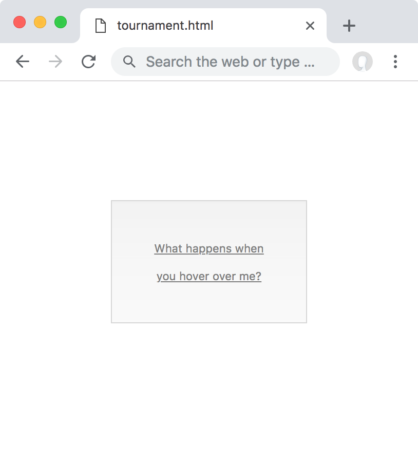
p.maroon#malamute button[disabled] {
margin: 100px;
cursor: copy;
}
.sapphire-shepherd p.headline.content button[disabled] {
padding: 2rem;
cursor: wait;
}
#purple-poodle button {
cursor: pointer;
text-decoration: underline;
}
#teal-terrier.fullpage button.submit-btn {
line-height: 2.5;
cursor: help;
}<body class="fullpage" id="teal-terrier">
<div id="purple-poodle">
<article class="sapphire-shepherd">
<p class="maroon headline content" id="malamute">
<button class="submit-btn" disabled>
What happens when you hover over me?
</button>
</p>
</article>
</div>
</body>These code samples come from Painless CSS, a book and video course that teaches you CSS from first principles. You can download the full repo with all 60 code samples and solutions in the course.
There are four competitors in this tournament. Each competitor submits three entries into this competition:
Entry 1 consists of the number of ID selectors in the CSS rule
Entry 2 consists of the number of class, attribute, and pseudo-class selectors in the CSS rule
Entry 3 consists of the number of tag and pseudo-element selectors in the CSS rule

The number inside each box represents the count of selectors assigned to that entry.
Our competitors are fighting over the cursor CSS property, and these are the declarations in conflict:
cursor: copy;cursor: wait;cursor: pointer;cursor: help;
Winning the First Annual CSS Tournament comes with a glamorous prize: the winner’s cursor value will apply to the our selected button.
Let’s meet the competitors:
Competitor 1: Maroon Malamute
p.maroon#malamute button[disabled] {
margin: 100px;
cursor: copy;
}This CSS rule has one ID selector (#malamute), one class selector (.maroon), one attribute selector ([disabled]), and two tag selectors (p, button).
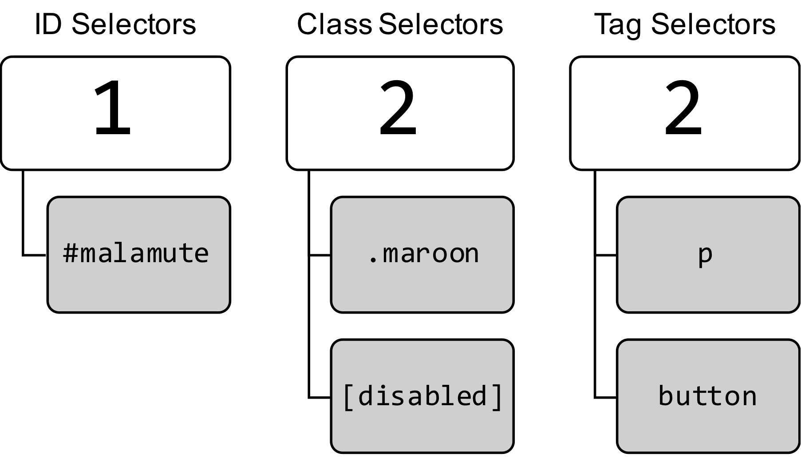
We can summarize this competitor’s entries with a single number: 122. This number is also known as the Specificity Level (or Specificity Score) of the selector. The higher this score, the higher the specificity.
Let’s meet the other competitors:
Competitor 2: Sapphire Shepherd
.sapphire-shepherd p.headline.content button[disabled] {
padding: 2rem;
cursor: wait;
}
This selector has a specificity score of 041.
Competitor 3: Purple Poodle
#purple-poodle button {
cursor: pointer;
text-decoration: underline;
}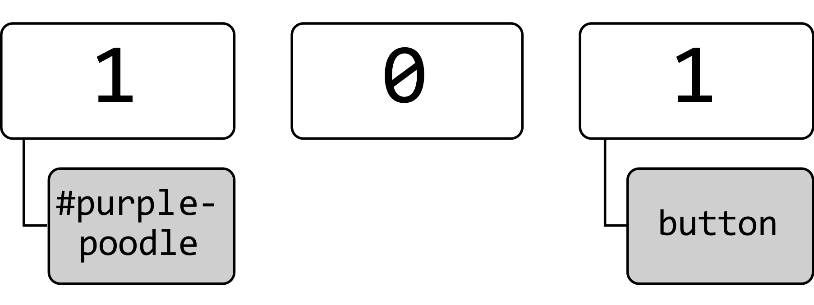
This selector has a specificity score of 101.
Competitor 4: Teal Terrier
#teal-terrier.fullpage button.submit-btn {
line-height: 2.5;
cursor: help;
}
This selector has a specificity score of 121.
Tournament Rules
While there is a conflict for cursor, the declarations below are not in competition with each other. They don’t participate in the tournament and they are all immediately applied as a style onto the button without needing to participate in the tournament.
margin: 100px;padding: 2rem;text-decoration: underline;line-height: 2.5;
There are three rounds to the tournament. In Round 1, all competitors submit their score from Entry 1 into the round. The competitor with the highest score wins that round. Similarly, competitors submit Entry 2 for Round 2, and Entry 3 for Round 3.
Round 1
For Round 1, we look at the number of ID selectors for all competitors. The competitor with the greatest number of ID selectors wins this round:
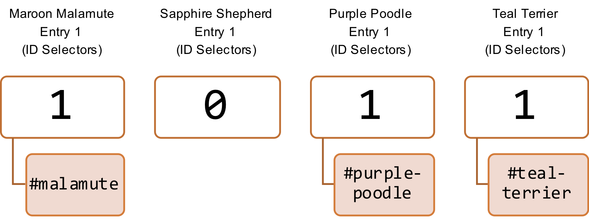
Sapphire Shepherd has no ID selectors, so it is immediately eliminated from Round 1!
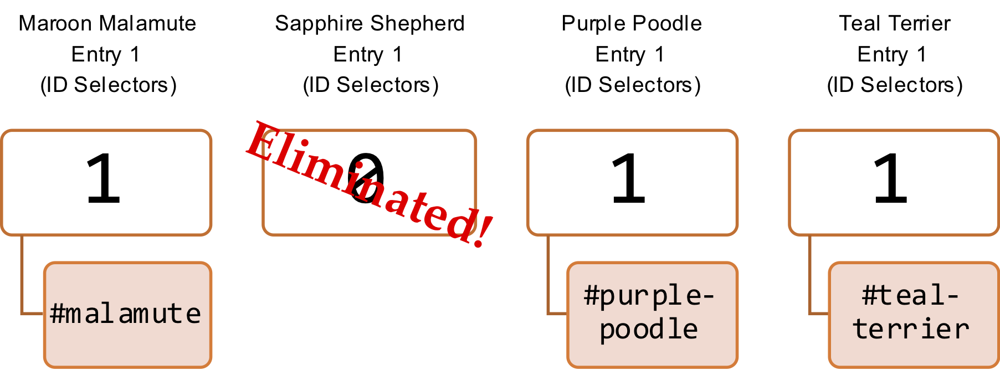
Once a competitor is eliminated, it doesn’t get to participate in any subsequent rounds.
Maroon Malamute, Purple Poodle, and Teal Terrier are tied at 1 ID selector each, so they all move on to Round 2.
Round 2
For Round 2, look at the number of class, attribute, and pseudo-class selectors for all remaining competitors. The competitor with the most of these wins this round:

Even though Sapphire Shepherd has the greatest number of class selectors in this round, it was already eliminated in the previous round, so it doesn’t win! It doesn’t matter if a competitor “could have won” if it stayed in the tournament—once competitor is eliminated, it’s permanently gone.
Both Maroon Malamute and Teal Terrier are tied in first place for Round 2, so they move forward to Round 3 and Purple Poodle is eliminated:
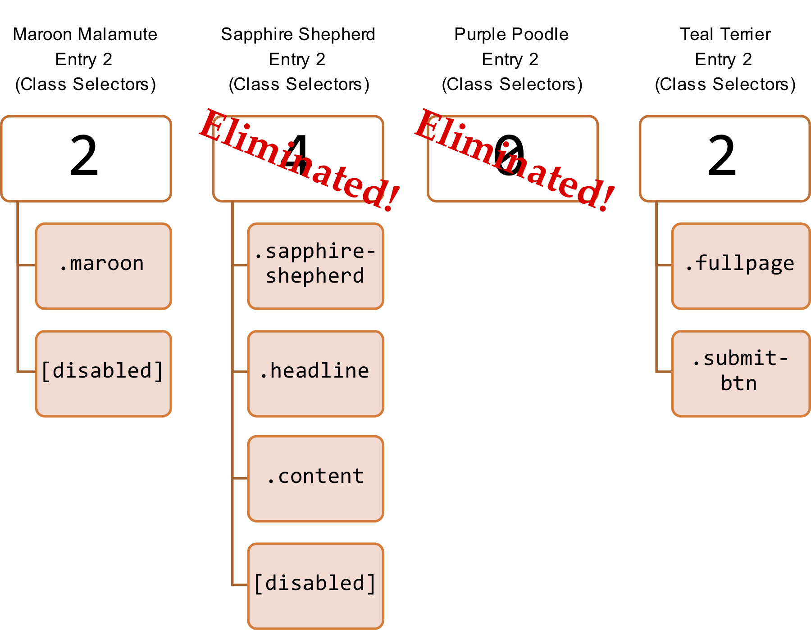
Round 3
For Round 3, look at the number of tag and pseudo-element selectors for all remaining competitors. The competitor with the most of these wins the tournament!
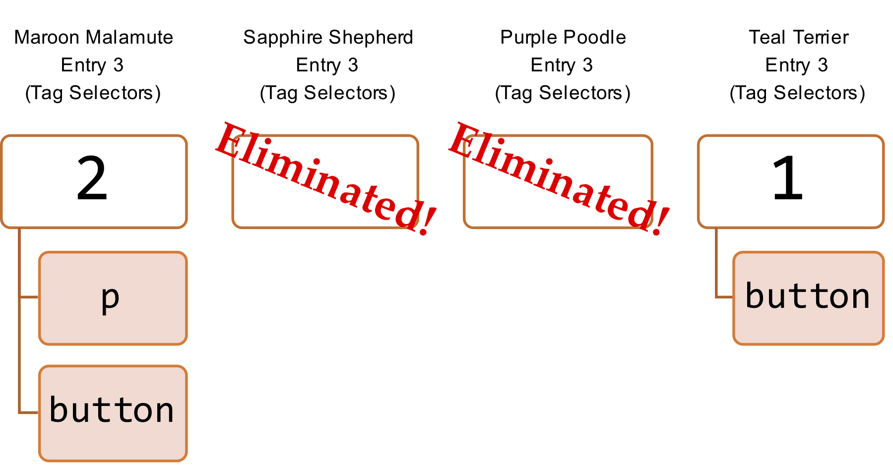
Maroon Malamute has 2 tag selectors and Teal Terrier has 1 tag selector, so Maroon Malamute wins the tournament!

The final outcome is that the maroon malamute CSS rule “wins” over the others:
p.maroon#malamute button[disabled] {
margin: 100px;
cursor: copy
}and the declaration cursor: copy is applied to the selected HTML element.
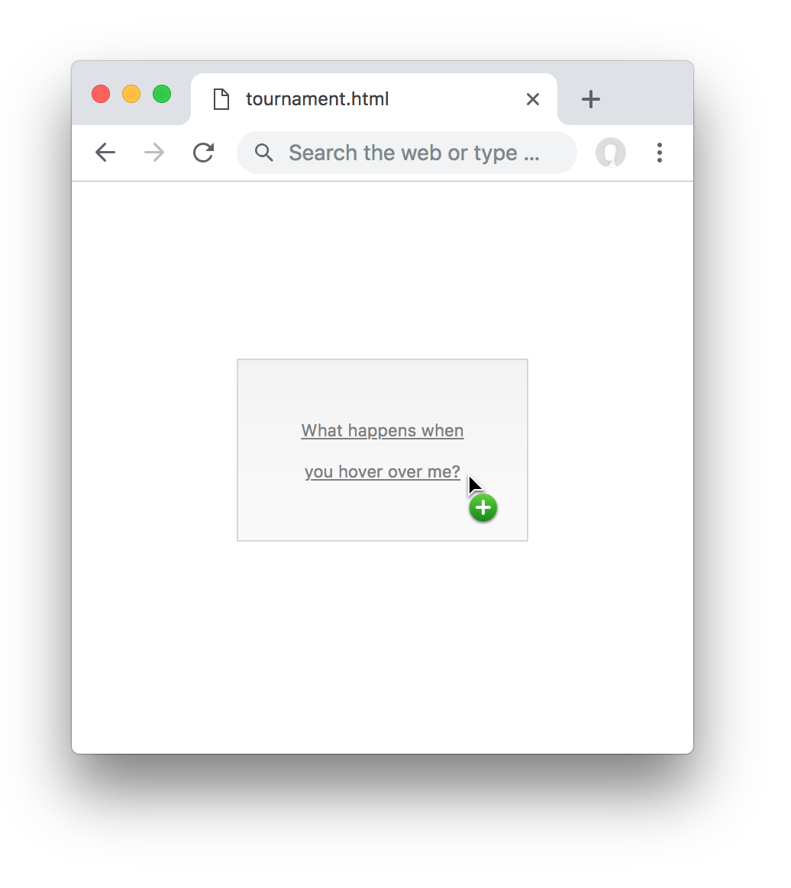
In this example, cursor was the only CSS property in conflict. If there were more than one property in conflict (say, two or more CSS rules both had different margin values), then we would run this tournament again for the next property (margin), starting over from the beginning.
Shortcut: Specificity Score
Now that you understand the tournament analogy, let’s simplify this whole thing to make it easier to use in practice.
First, instead of breaking up entries by ID, class, and tag selectors, let’s just assign scores to each CSS rule as follows:
- Every ID selector is worth 100 points
- Every class, attribute, or pseudo-class selector is worth 10 points
- Every tag or pseudo-element selector is worth 1 point
Then, we’ll add up all the scores for each competitor:
Competitor 1: Maroon Malamute
p.maroon#malamute button[disabled] {}
(1 × 100) + (2 × 10) + (2 × 1) = 122
Maroon Malamute has 122 points.
Competitor 2: Sapphire Shepherd
.sapphire-shepherd p.headline.content button[disabled] {}
(0 × 100) + (4 × 10) + (1 × 1) = 41
Sapphire Shepherd has 041 points.
Competitor 3: Purple Poodle
#purple-poodle button {}
(1 × 100) + (0 × 10) + (1 × 1) = 101
Purple Poodle has 101 points.
Competitor 4: Teal Terrier
#teal-terrier.fullpage button.submit-btn {}
(1 × 100) + (2 × 10) + (1 × 1) = 121
Teal Terrier has 121 points.
Specificity Rank
Next, instead of going through the tournament round by round, let’s just sort all the specificity scores for each of our competitors from highest to lowest:
122points: Maroon Malamute121points: Teal Terrier101points: Purple Poodle041points: Sapphire Shepherd
Who’s the winner? Simple! The winner of the tournament is the competitor with the highest score: Maroon Malamute. Another neat fact is that reading this list from bottom to top is the order in which the competitors were eliminated! So Sapphire Shepherd was eliminated first, then Purple Poodle was eliminated second, then Teal Terrier was eliminated third.
“Wait a sec,” you may ask, “why did you go through the trouble of explaining the whole tournament analogy when this ranking method is so much easier?” Well, that’s because this shortcut of sorting the specificity scores doesn’t work when you have more than 9 classes (or tags, or IDs, etc.) on an element. Here’s an example:
.big.big.big.big.big.big.big.big.big.big.big.big.big {
font-size: xx-large;
}
.medium.medium {
font-size: medium;
}
#x-small {
font-size: x-small
}These code samples come from Painless CSS, a book and video course that teaches you CSS from first principles. You can download the full repo with all 60 code samples and solutions in the course.
<p class="medium big" id="x-small">
What size am I?
</p>Here are the “scores”:
.big.big.big.big.big.big.big.big.big.big.big.big.big {}has a score of(13 × 10) = 130.medium.medium {}has a score of(2 × 10) = 20#x-small {}has a score of(1 × 100) = 100
You would expect the size of the element to be xx-large, but it is in fact x-small!
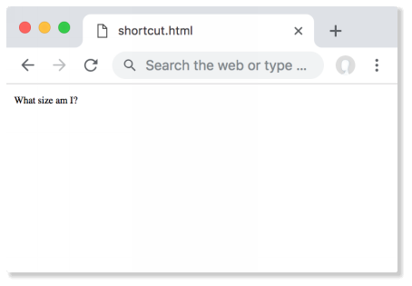
In the original tournament analogy, the rounds (and entries) are separate from each other. The shortcut ranking method doesn’t work for more than 9 classes because the moment you add the 10th class to a selector which already has a score of 90, its score becomes 100 and it “overpowers” the ID selector, which shouldn’t happen. This problem occurs because we’re using a base-10 counting system, and you could avoid it by changing the base, but at that point it’s much simpler just to use the tournament analogy as your mental model.
Luckily, in practice we usually don’t write more than 9 selectors in a CSS rule, so our shortcut of adding together all the specificity scores works handily for most situations you encounter in the real world.
Exceptions to the Tournament
Normally the winner of the tournament is the CSS declaration that gets rendered; but there are certain exceptions where a declaration that is not the winner gets rendered instead:
Inline Styles
Any inline styles on an HTML element (where you write your CSS directly on the HTML element using the style attribute, instead of using a separate stylesheet) automatically override any winners of the tournament. For example:
#bold {
font-weight: bold;
}<p style="font-weight: normal;" id="bold">
This text is not bold.
</p>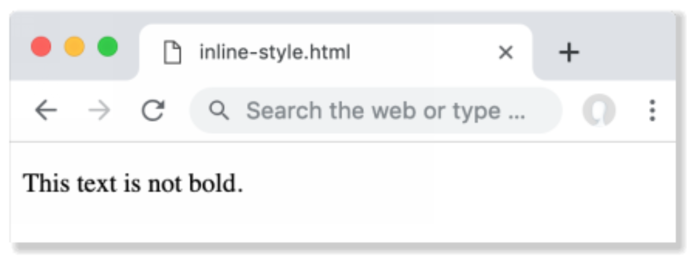
In addition to the reasons I described in Chapter 6 of the Painless CSS book, this is another reason why we try to avoid inline styles: they can’t be overwritten by any CSS rules we write in our stylesheets.
Counterintuitively, using inline styles can be a best practice in certain situations when you coding for a front-end framework such as React, Vue, or Angular. I have a discussion about this later in Beyond Cascading. For now, we’ll avoid using inline styles.
This is an exception to this exception! While inline styles override the tournament winners, any declarations that use the !important keyword will override an inline style.
!important
!important is a special keyword in CSS that makes your declaration always win the tournament, no matter what, even if there are inline styles on the element! It looks like this:
p {
font-weight: bold !important;
}
#not-bold {
font-weight: normal;
}These code samples come from Painless CSS, a book and video course that teaches you CSS from first principles. You can download the full repo with all 60 code samples and solutions in the course.
<p style="font-weight: normal;" id="not-bold">
This text IS bold.
</p>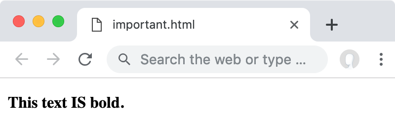
We avoid using !important in our CSS because it can’t be overwritten.[1] If you change your mind later, you can’t overpower it with a different rule; you have to remove the !important and then also check every other rule for that element to make sure nothing else breaks, because usually the reason an !important was added in the first place was to unbreak some buggy code.
The true nightmare of a CSS author is to open up a CSS file and see !important sprinkled everywhere! Selectors in this kind of situation are called Overspecified or Overpowered.
This is also why I recommend avoiding IDs for CSS styling, because IDs are also highly powered. No matter how many CSS classes you write, you cannot override an ID.
The tournament analogy gives us an intuitive sense for why overpowered selectors are bad. If a selector is enormously powerful in the tournament, it wins faster and at earlier rounds, meaning the only way to beat a powerful selector is to write another style that is even more highly powered.
This tendency for specificity to always escalate is known as a specificity war. Like stockpiling nuclear weapons, no one wins at this war—it only becomes harder to de-escalate as specificity increases. The only way to avoid an all-out specificity war is to not stockpile highly powered selectors in the first place.[2]
Tied until the end
What if we reach the last round of the tournament, and there is still a tie?
If we get to the end of the tournament and there is still a tie, then the final tiebreaker is the location of the CSS rule in the source CSS file. Anything that is written later (nearer to the bottom of the file) will win over anything that is written earlier (nearer to the top of the file).
If you import multiple CSS files into your HTML document, (e.g. you have multiple <style> or <link> tags), then it’s the last file (nearer to the bottom of the HTML document) that wins the tie. Thus, the tournament can never be tied all the way through, because the final tiebreaker is the physical location of the code, and this is always unique.
This is also how duplicate declarations are resolved; if you write:
span {
color: red;
}but then later in the same file you write
span {
color: blue;
}Then color: blue will get applied to your span.
Thus, the order in which you import any third-party CSS files is important, (e.g. using <link> tags, or @import) because changing the order will change the outcome of the last tiebreaker. In practice, this means the first thing we import is our normalize.css or reset.css file for standardizing the User Agent Stylesheet, followed by any third-party CSS frameworks such as Foundation or Bootstrap, followed by our own site-specific code.
The tiebreaker rule is why I recommend against tag selectors and encourage you to use class selectors instead, because tag selectors are underspecified. Tag selectors have the lowest power, so they are too sensitive to their order in your CSS file, and your design can break if you ever re-order your imports, as the tiebreaker outcome will change in a re-ordering.
Inheritance
Inherited properties are always given a specificity score of 000, no matter what their original specificity was.
#powerful {
font-weight: bold !important;
}
.unpowerful {
font-weight: normal;
}<div id="powerful" style="font-weight: bold;">
<div class="unpowerful">CSS rules everything around me</div>
</div>Since font-weight is an inherited property on the child, it doesn’t matter that the parent is both a highly powered ID selector and has an !important, the .unpowerful selector will win in this situation.
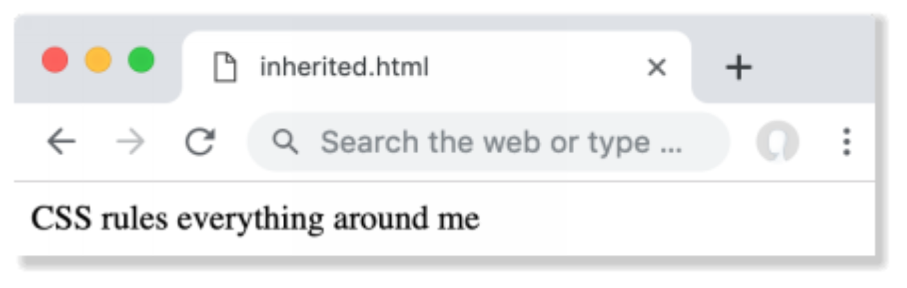
However, if we change our HTML so that the ID #powerful becomes non-inherited,
<div>
<div class="unpowerful" id="powerful">
CSS rules everything around me
</div>
</div>then the ID will win as expected.
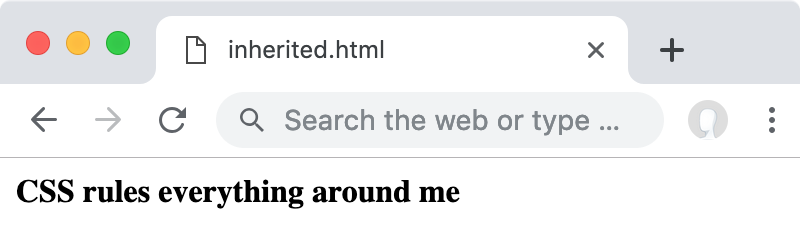
The “generational distance” (whether the property was inherited from a parent, or a grandparent) doesn’t matter—only CSS selectors that directly select your element have a specificity greater than 000. Only when there are no CSS rules directly selecting your HTML element will parents win over grandparents:
<div id="powerful">
<div class="unpowerful">
<p>CSS rules everything around me</p>
</div>
</div>Universal Selector
The Universal Selector * has a specificity of 000.
Non-Participants
Keep in mind that the tournament only applies to properties in conflict in each other on a selected element—if two selectors don’t select the same element, then they are not in conflict. For example, what color will the button background be?
button {
/* Specificity: 001 */
background-color: orange;
}
button .submit-btn {
/* Specificity: 011 */
background-color: green;
}<button class="submit-btn">What color am I?</button>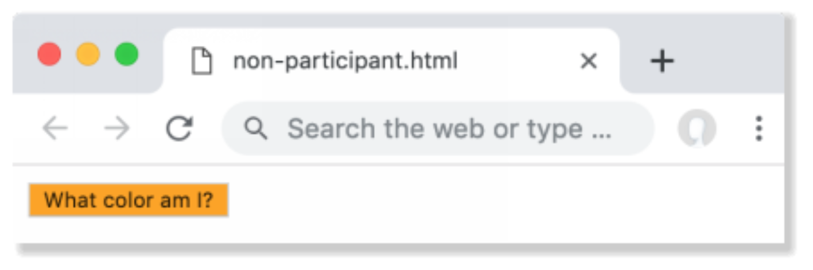
The answer is it will be orange! This is because the selector button .submit‑btn is not selecting our element (it would have selected any children of a button with a class of .submit‑btn), and despite its higher power, it does not even participate in the tournament! If the second selector had instead been button.submit‑btn (notice the lack of a space), then the button background color will indeed be green.
Also keep in mind that a tournament is not needed when properties are not fighting each other. For example:
.welcome-message {
color: salmon;
background-color: seashell;
}
#headline {
margin-top: 0;
background-color: lavender;
}<h1 id="headline" class="welcome-message">
Welcome to my blog
</h1>color and margin-top are talking about different things, so they can both apply to the same element at the same time because they’re not fighting each other. However, background-color is in a fight, so for this property we use the tournament to find a winner. #headline wins the tournament against .welcome-message so the element is given a background-color of lavender. The final set of properties applied to our <h1> is:
color: salmon;margin-top: 0;background-color: lavender;
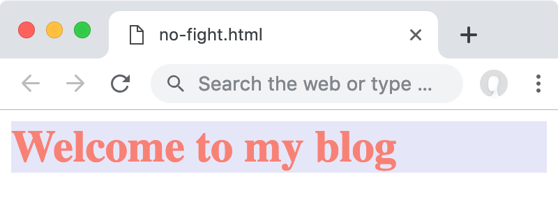
Combinators
Combinators are ignored in our tournament. To determine the winner of a round, we follow only the scoring rules laid about above. You would think that changing from a broad selector like (the descendent combinator) to a more narrow selector like > (the child combinator) would change the outcome of the tournament, but combinators only affect whether or not the CSS rule is eligible to participate in the tournament in the first place (since it changes whether or not our element is actually selected), and they do nothing to the specificity scores.
Here’s an example; what color will our text be?
p > span {
color: firebrick;
}
p span {
color: aquamarine;
}These code samples come from Painless CSS, a book and video course that teaches you CSS from first principles. You can download the full repo with all 60 code samples and solutions in the course.
<p><span>What color am I?</span></p>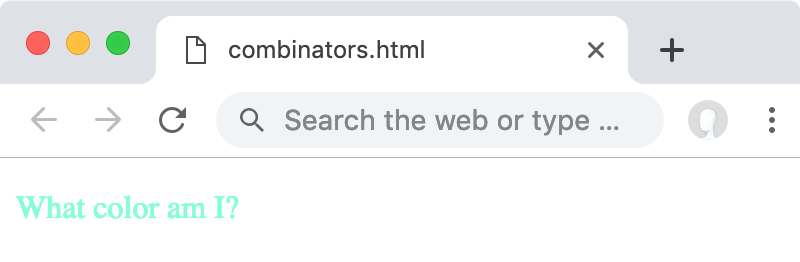
The answer is the text will be aquamarine! It totally seems like p > span should win because the extra child combinator > makes it look “more specific” since it’s narrowing down to direct children instead of all descendants, but the > does not affect any of the specificity scores, so when we run the tournament we have a score of 002 competing against a score of 002. Since the result of this tournament is a tie, the last selector p span wins because of the tiebreaker rule, and our text is given a color of aquamarine.
This example reveals the problem with the classical way of thinking about cascading. The popular explanation of comparing the CSSOM to how the HTML DOM is constructed will mislead you in this example because the structure of the tree has nothing to do with the results of our tournament.
The Painless CSS Tournament
Here is a summary of what we learned, which I shall refer to later as the Painless CSS Tournament: the bottom-up model where we take the perspective of the HTML element, instead of the perspective of the browser rendering engine:
Look at each element one by one, ask “what CSS rules apply to you?”
Look at all the rules you found in Step 1, and list all the properties that apply from those rules (e.g. include all inherited properties and discard any non-inherited properties from parents).
From the list of properties in Step 2, immediately apply all declarations which are not in a fight. You are left with a smaller list of properties which are in a fight.
Going property by property, resolve each fight by using the tournament rules.
And now you’re done!
Compare this to the classical (popular) way of explaining CSS cascading described in Chapter 9 of the book:
Parse the CSS and construct the CSSOM.
“Cascade” rules through the CSSOM down to all elements, keeping track of which rules apply to what element using a tree.
From the tree generated in Step 2, apply all declarations to their associated node on the tree.
If there are any conflicts between properties, resolve the fight by comparing specificity scores.
The disadvantage of the top-down model is it does not help us debug CSS issues with individual elements. In the top-down model, we must go through the entire CSSOM to figure what styles are associated to a specific HTML element, and we can’t easily visualize the CSSOM tree in our heads.
In contrast, it’s much easier to focus on one individual element and ask, “what CSS rules apply to you?” then go off and find those. In fact, the developer tools in your browser allow you do exactly this using the “Inspect” or “Inspect Element” feature, which will helpfully find all the rules associated with an element without you needing to go through the entirety of your website:
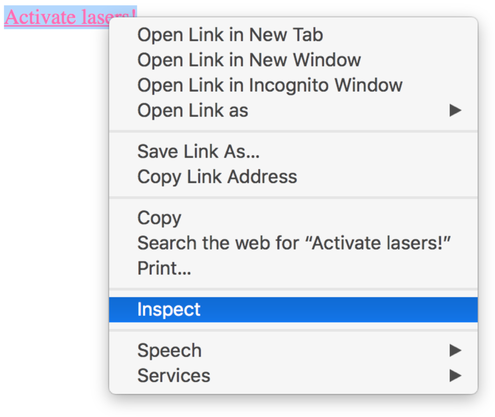
a {
color: orchid;
}
body a {
color: seagreen;
}
.command {
color: royalblue;
}
a.command {
color: sienna;
}
a[href].command {
color: aqua;
}
#lasers {
color: hotpink;
}These code samples come from Painless CSS, a book and video course that teaches you CSS from first principles. You can download the full repo with all 60 code samples and solutions in the course.
<body>
<a href="/" class="command" id="lasers">
Activate lasers!
</a>
</body>All CSS rules that apply to the inspected element show up conveniently in a list in the sidebar:
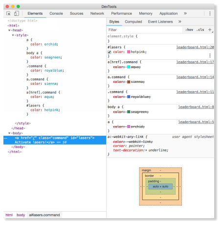
Even though it’s called “Cascading Style Sheets”, I like to disregard the whole “Cascading” concept and just think about it in terms of each element’s specificity score, and how that affects the outcome of the tournament.
After the Tournament
Order of elimination
Something cool you may have noticed when you opened the developer tools panel: the list of CSS rules we see is ordered according to where they finished in the tournament!
You can think of this panel as a “leaderboard” for the tournament, where the 1st place winner of the tournament shows up at the top, then the selector below that is the 2nd place winner, and so forth.[3]
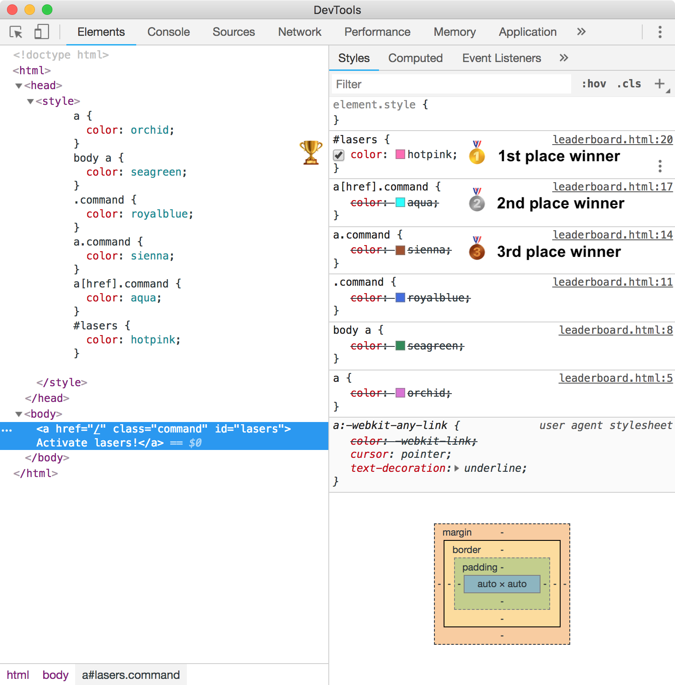
This becomes clear when you use the panel to disable styles. You can click on the checkbox beside any declaration to enable or disable it. If I disable the declaration that won 1st place, then the 2nd place declaration is the “winner” of the tournament instead, so it becomes the style that is applied to the HTML element.
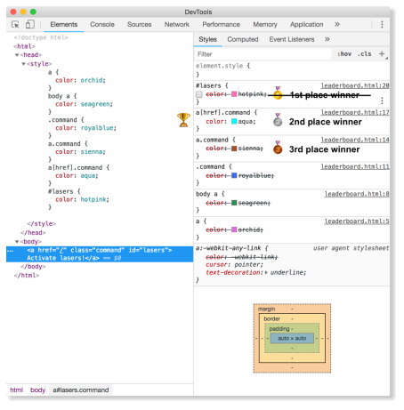
You can take advantage of this ordering when debugging. To find a specific declaration, you should start at the top and then work your way down to understand what’s going on, because it’s more likely that the final property that survived the tournament is near the top.
Once you find the declaration you’re looking for, you can stop there and you don’t need to continue scrolling down to the bottom, because anything nearer the bottom will have already lost the tournament long ago, meaning that you’re wasting your time if you keep scrolling—especially when debugging a large website with thousands of styles.
If you’ve scrolled all the way to the bottom and still can’t find your declaration, remember to check the user agent stylesheet in the gray area! It may be that you forgot to style your component and the default style is being applied.
Beyond Cascading: CSS-in-JS
If you’re thinking to yourself, “this seems very complicated and a lot of work to keep track of”, I agree with you!
To address this, the community invented CSS-in-JS libraries and inline style frameworks. Cascading, selectors, inheritance, and specificity are some of the hardest concepts about CSS to understand, so lots of developers sidestep the problem by using a library which abstracts away all of this, so you never have to worry about it again. These frameworks also give you other benefits such as code modularity (by removing the CSS global scope) and the ability to hook into automated tests.
For more info about the benefits of a CSS-in-JS library, I recommend watching this talk by Max Stoiber.
Inline style frameworks highlight why you should not learn by memorizing knowledge from dogma. Some experienced developers have a visceral negative reaction to hearing “inline styles”, because they were taught early in their career the best practice to “never use inline styles”. Even I told you not to do it in Chapter 6 of the book!
Indeed, “never use inline styles” was a best practice a long time ago when it made HTML hard to read, hard to debug, and hard to change. However, the technology chugs along and eventually upends the assumptions that lead to these “best practices”. New assumptions lead to new best practices.
Inline styles are only painful when you write them by hand—but if you use a CSS-in-JS library to manage your inline styles for you, these downsides disappear, and you are left only with the advantages of code modularity, automated testing, and simple management that works hand-in-hand with a front-end JavaScript framework such as React.
If you are stuck with the dogma of “never use inline styles”, you won’t have the curiosity to explore what it means when the original assumptions changed. This is why I’ve structured this book to encourage you to learn to reason for yourself using the Five Steps to Painless CSS.
After you’ve learned a framework like React, Angular or Vue, you can come back and learn a CSS-in-JS library to use in your projects. As of this writing (in 2019), the most popular framework that I recommend for CSS-in-JS is Styled Components.
So, if you don’t have to use the cascading or specificity rules by installing a CSS‑in‑JS framework, why learn cascading or specificity at all? I think these are still useful concepts to learn because while your CSS-in-JS framework can protect you from the perils of cascading 99% of the time, the 1% of the time when you encounter a horrible career-ending bug, you can have the confidence to fix it and save your career instead (true story).
Keep in mind that not every website uses a CSS-in-JS framework, and for smaller websites you may not want to go through the trouble of setting up one, especially because it requires integration into a larger JavaScript framework such as React or Vue. In these situations, plain vanilla CSS works simply fine.
Finally, the last reason why I think it’s still useful to learn all this, is because… umm well… “cascading” is right there in the name: Cascading Style Sheets.
I hope you enjoyed this article, and that it demystified CSS specificity and cascading for you. This article is an excerpt from Painless CSS, a book and video course that teaches you CSS from first principles. You can learn more at www.painlesscss.com
Painless CSS is a book and video course that teaches you from first principles how to build beautiful, intuitive websites that are a joy to design and maintain.
Learn more at www.painlesscss.com
Footnotes
[1] Or can it? What if you have two !importants that are fighting each other? I have a discussion about this in the book in Exercise 10 § Homework 2.
[2] By the way, this principle doesn’t just apply to specificity, but also to properties such as z-index. If two or more elements are overlapping, z-index determines which of them is “above” the other one, from the user’s point of view. Normally, all elements have a z-index of 0, but giving your second element a z-index of 1 makes it overlap the first one.
If you wanted to introduce a third element to overlap the first two, you should give it a z-index of a small number like 2 (or 5, if you want flexibility to add more things in between later) instead of a z-index of 20000, because otherwise you’ll have to give future elements a z-index of 20001 or higher to beat all the current ones. But if you had a z-index of 5, then you would only need to use a smaller number in the future like 6.
[3] Or if you read from bottom to top, it’s in the order that they were eliminated from the tournament; so, the style at the bottom was eliminated first, then the selector above that was eliminated second, and so forth.